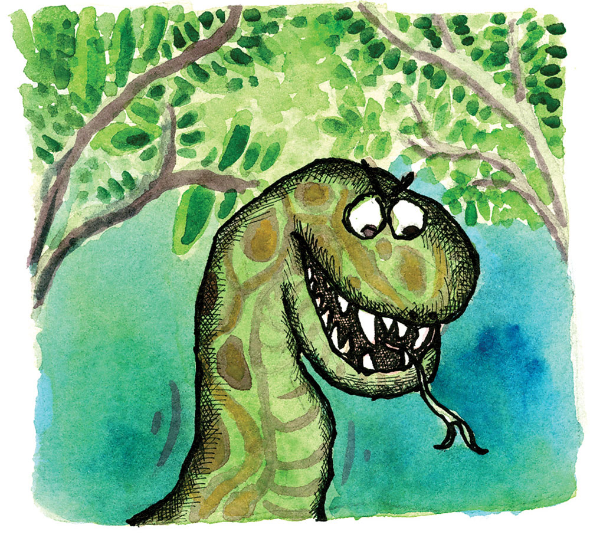
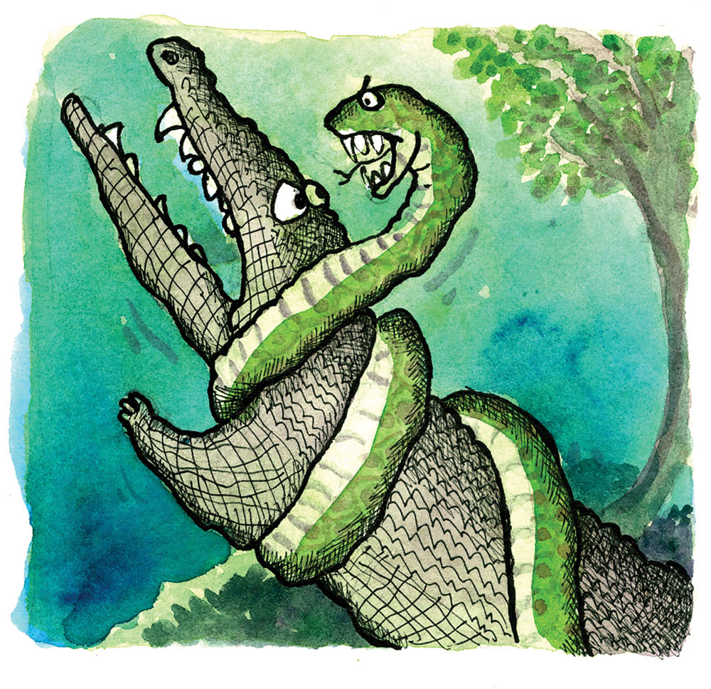

Ang Buaya ug ang Bitin
Sa unang panahon, sa sityo Buayahan sa lungsod sa Medellin, may usa ka dako apan tiguwang nga buaya ug usa pod ka dako ug batan-on nga bitin. Nagkalalis silang duha kon si kinsa gyud ang modaog ug makapuyo sa mao nga lugar nga ilang gilalisan.
“Hoy! Buaya! Pahawa na aning lugaraha kay tiguwang ka na!” Hinambog nga abog sa dakong bitin nga si Kondo, naglambud ang lawas sa dakong kahoy sa bung-aw. May gitas-on nga siyam ka tiil ug ang gilapdon sa iyang lawas susama sa usa ka dakong lubi.
“Abe nimo, Dong Kondo, sukad pa sa unang panahon diri na ako nagpuyo, diri na ako natawo, nagkaasawa ug nagkaanak, nagkaapo na gani, diri na natawo ug nalubong ang akong mga ginikanan. Apan ikaw napadpad lang ning dapita, naanod sa dako nga balod ug sug ning suba ug nanimuyo na diri. Wala ko kini angkuna nga suba nga amo apan diri na ako nakaamgo og buot hangtod karon nga natiguwang na lang ako. Kon gusto ka nga mopuyo diri, puyo lang, tutal naa ka ra man diha ibabaw sa dakong kahoy sa bung-aw naglambudlambod ang lawas ug kami dia lang sa tubig naglutawlutaw. Magkatinabangay pa ta kon gusto ka!” Taas nga pulong sa buaya.
“Dili ko mosugot! Dili nako madawat nga duha kita ka klase diri sa suba. Di ko gusto nga mopuyo pa ka diri ug ang imong tanan nga mga sakop! Kay wala gyud ako makauyon anang inyong mga dagway nga pwerte gyud nga pagkangil-ad! Pwerte gyud nga pagkabati! Hahaha!” Siyagit bugalbugal sa bitin ngadto sa buaya.
“Ay sus, Dong Kondo, ang mga hakog dili ra ba gyud molampos sa ilang mga tumong ug tuyo kay dili kana ikatugot sa Kahitas-an. Magtinabangay lang nuon ta ay!” Pagpaubos gihapon nga sulti sa buayang tiguwang nga si Bua.
“Ay duhh! Dili lagi ko, Bua! Hapit na man sad hinuon ka mamatay kay tiguwang ug luya na! Ako pa nimo dad-on na lang na nimo ang imong tanan kaliwat palayo ani nga lugar mentras wala pa tika patya! Hahaha!” Padayon sa hambugero nga bitin.
“Sa kataas, kalapad ug kalawom ani nga suba, Kondo, pwede ra man ta nga dili magkita, tutal naa ka ra man diha nagpatong sa dakong kahoy.” Padayon ni Bua, nga hapit na maubsan sa iya nga pasensiya.
“Dili lagi ko!” lanog nga siyagit sa dakung bitin.
“Mas mayo pa siguro ani, Kondo, magpustaanay na lang ta.”
“Unsa man na nga pustaanay, tiguwang? Isulti dayon aron masugdan na!”
“Kon si kinsa gayud ang makapuyo ani nga suba, kay dili man gayud kaha ka mosugot nga duha kita diri ka klase. Bugno. Pinatyanay ang akong gipasabot nimo, Kondo!” Hagit sa buaya ngadto sa bitin.
“Aw, mao man kaha?! Sugot kaayo ko uy! Pila ra bay labay ug dugmok nimo! Tiguwang na luya pa! Hahaha!” Katawa sa bitin.
“Kon mapilde ug mapatay tika, Kondo, ang imong mga sakop nga bitin ma gamay man o madagko ang mamalhin sa lain nga lugar ug pagadad-on ang imong patay nga lawas. Ug kon ako ang imong mapatay, mao sad ang pagabuhaton sa akong mga sakop. Sugot ka ba ana, Kondo?”
“Hahaha! Uyon kaayo ko ana! Kagamay ra baya nimo kumpara sa ako. Unom ka lang ka tiil apan ako siyam, ug tiguwang na pod ka ug ako bata pa! Hahaha!”
“Pangandam na lang, Kondo. Hangtud sa kamatayon ra ba ni nga away. Magkita na lang kita sa sunod adlaw para sa oras binalhinay!” pahimangno sa tiguwang buaya sa batan-on nga bitin.
“Hahaha! Ako ba gihadlok mo, tiguwang? Tan-awon lang unya nato sa sunod adlaw kon si kinsa ang pagaalsahon ang lawas ngadto sa gawas ning suba. Usa ra ka labtik sa akong ikog kirigkirig ka na! Hahaha!” Mibuhakhak pag-ayo ang bitin.
Nagpanglingolingo na lang ang tiguwang buaya sa kahambugero ni Kondo.
Pagkasunod adlaw…
“Asa na ang inyong tiguwang buaya nga makigharong nako nga batan-on ug dako nga bitin? Kay pit-on ko na ang iyang lawas ug gupok-gupokon ko kini.” Daw hari nga misulti ang bitin nga nagkumbitay sa dakong kahoy sa bung-aw.
“Dia na ako!” Mapaubsanon nga pulong sa tiguwang buaya.
“Sige!” Mikalit pog layat ang bitin sa buaya nga nahikurat sa katikasan sa bitin.
Unya…
Pak! Puk! Blog! Ngiiiiik! Gwaaaaaaaaaaah! Ssssshhhhhssh! Grrrrrrr! Ssshhhsh!
Plak! Puk! Blog! Bssssssssssshhs!!!!! Pak!
Ug nagkadugo ang nalubog nga suba. Nagpaabot ang mga bitin ug mga buaya kon si kinsa nila ni Bua ug Kondo ang molutaw pagbalik nga buhi pa.
Paglabay sa pila ka gutlo gidala na sa mga bitin ang lawas ni Kondo nga nakuniskunis sa mga gahi nga ngipon ni Bua.
Sukad niadto ginganlan na ang lugar og Buayahan, kay puros ra mga buaya ang nagpuyo sa mao nga dapit sa dakong suba sa lungsod sa Medellin.